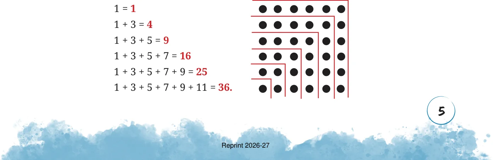
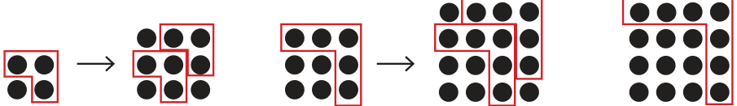
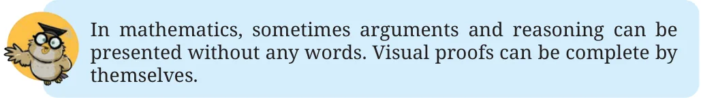
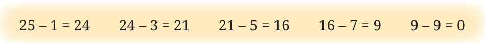
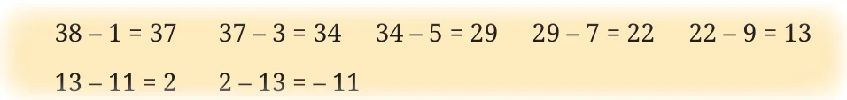
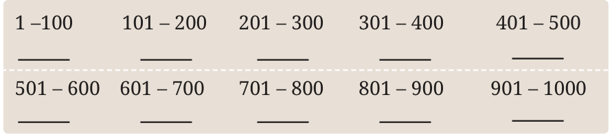

Let us explore the differences between consecutive squares. What do you notice?
\(4 - 1 = 3 9 - 4 = 5 16 - 9 = 7 25 - 16 = 9\)
See if this pattern continues for the next few square numbers. From this we observe that adding consecutive odd numbers starting from 1 gives consecutive square numbers, as shown below.


Do you remember this pattern from Grade 6? The picture below explains why each subsequent inverted L gives the next odd number:

\(1 + 3 1 + 3 + (3 + 2) 1 + 3 + 5 1 + 3 + 5 + (5 + 2) 1 + 3 + 5 + 7\)
We see that the sum of the first n odd numbers is n . Alternatively, every square is a sum of successive odd numbers starting from 1.

Also, we can find out whether a number is a perfect square by successively subtracting odd numbers. Consider the number 25, successively subtract 1, 3, 5, ... until you get or cross over 0,

This means \(25 = 1 + 3 + 5 + 7 + 9\) and is thus a perfect square. Since we
subtracted the first five odd numbers, \(25 = 5\) .
Using the pattern above, find 36 , given that \(35 = 1225\). From the question we know that 1225 is the sum of the first 35 odd
numbers. To find 36 , we need to add the 36th odd number to 1225. How do we find the 36th odd number? The 1st odd number is 1, 2nd odd number is 3, 3rd number is 5, …, 6th odd number is 11 and so on. What is the \(n^{th}\) odd number? The \(n^{th}\) odd number is \(2n - 1\). Therefore, the 36th odd number is 71.
By adding 71 to 1225, we get 1296, which is 36 . Consider a number such as 38 that is not a square and subtract consecutive odd numbers starting from 1.

This shows that 38 cannot be expressed as a sum of consecutive odd numbers starting with 1.

Thus, we can say that a natural number is not a perfect square if it cannot be expressed as a sum of successive odd natural numbers starting from 1. We can use this result to find out whether a natural number is a perfect square.
Find how many numbers lie between two consecutive perfect squares. Do you notice a pattern?
How many square numbers are there between 1 and 100? How many are between 101 and 200? Using the table of squares you filled earlier, enter the values below, tabulating the number of squares in each block of 100. What is the largest square less than 1000?
